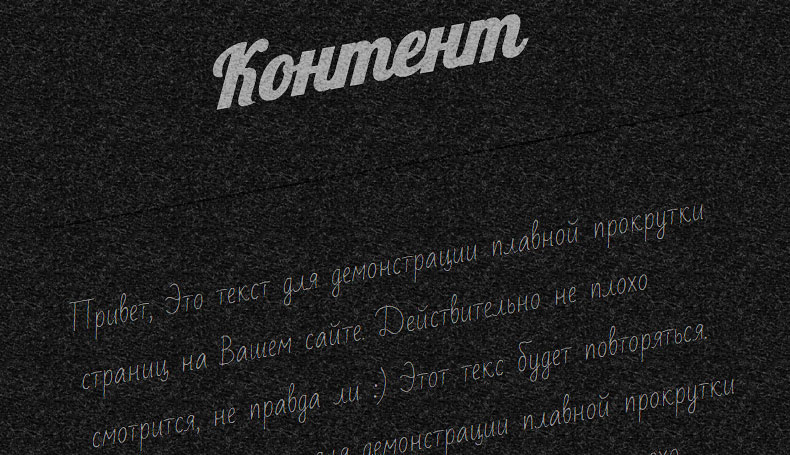

Как сделать плавную прокрутку для всего сайта с помощью JQuery и CSS
Разместил Александр / Просмотров: 41 378 / Комментариев: 9
Приветствую, дорогие друзья. Как Вы возможно заметили, что практически во всех браузерах прокрутка на сайтах очень резкая и не красивая. И конечно же хотелось бы сделать прокрутку для своего сайта более плавной, естественно это можно сделать и к тому же сильно не напрягаться. Делается это с помощью простого JQuery плагина и нескольких правил CSS. А для того, чтобы посмотреть как это всё работает предлагаю Вам взглянуть на демо, которое находится ниже.

Ну а теперь давайте перейдём прикреплению плавной прокрутки к нашему сайту.
HTML
Для начала нам нужно будет прикрепить библиотеку JQuery. Если она у Вас уже прикреплена, пропустите этот шаг:
|
<script src="http://ajax.googleapis.com/ajax/libs/jquery/1.11.0/jquery.min.js"></script> |
Затем нам нужно прикрепить сам JQuery плагин, который и отвечает за нашу плавную прокрутку, и вместе с ним же идут отдельные правила CSS которые изменяют саму полосу прокрутки на сайте. Подробнее на счёт полосы прокрутки мы поговорим подробнее в следующем уроке, а пока что только плавная прокрутка. А вот и сами правила и плагин:
|
2 3 |
<script src="jquery.mCustomScrollbar.concat.min.js"></script>
<link rel="stylesheet" href="jquery.mCustomScrollbar.css"> |
Всё. Теперь первый и немаловажный шаг мы уже сделали. Теперь нам нужно добавить одно простое правило в стили CSS нашего сайта.
CSS
|
2 3 |
html, body{ height: 100%; } |
Это нужно для того, чтобы дать понять нашему плагину, что ширина страницы растянута и является 100% в высоту. Обязательно добавьте это правило в CSS иначе прокрутка работать не будет.
Скрипт
После того как Вы всё добавили, что представлено выше, нам нужно включить сам скрипт, который мы прикрепили выше.Это делается очень просто, нужно лишь добавить желательно перед закрывающем тегом </body> в конце кода сайта:
|
|
<script> (function($){ $(window).load(function(){
$("body").mCustomScrollbar({ theme:"dark-thin" });
}); })(jQuery); </script> |
А сейчас предлагаю подробнее разобрать демо пример. И начнём мы с HTML.
HTML в демо
|
2 3 4 5 6 7 8 9 10 11 12 13 14 15 16 17 18 19 20 21 22 23 24 25 26 27 28 29 30 31 32 33 34 35 36 37 38 39 40 41 42 43 44 45 |
<!DOCTYPE html>
<html lang="ru">
<head> <meta charset="utf-8" />
<title>Плавная прокрутка для сайта</title>
<meta name="viewport" content="width=device-width, initial-scale=1" />
<link rel="stylesheet" href="style.css"> <link rel="stylesheet" href="jquery.mCustomScrollbar.css">
</head>
<body>
<section class="cont">
<h2>Контент</h2> <hr /> <div class="text"> Привет, Это текст для демонстрации плавной прокрутки страниц на Вашем сайте. Действительно не плохо смотрится, не правда ли :) Этот текс будет повторяться. </div> <hr />
</section>
<script src="http://ajax.googleapis.com/ajax/libs/jquery/1.11.0/jquery.min.js"></script> <script src="jquery.mCustomScrollbar.concat.min.js"></script>
<script> (function($){ $(window).load(function(){
$("body").mCustomScrollbar({ theme:"dark-thin" });
}); })(jQuery); </script> </body> </html> |
Как Вы можете видеть, что тут я использовал совершенно стандартную разметку HTML5, со всеми вставленными скриптами и CSS файлами о которых мы говорили выше. Думаю, что тут и объяснять нечего, если Вам будет что либо не понятно обязательно спросите в комментариях.
Ну а сейчас давайте взглянем на CSS правила.
CSS из демо
|
2 3 4 5 6 7 8 9 10 11 12 13 14 15 16 17 18 19 20 21 22 23 24 25 26 27 28 29 30 31 32 33 34 35 36 37 38 39 40 41 42 43 44 45 46 47 |
@import url(http://fonts.googleapis.com/css?family=Bad+Script&subset=latin,cyrillic); @import url(http://fonts.googleapis.com/css?family=Lobster&subset=latin,cyrillic);
body{ background-color: #fff; color: #555; font-size: 14px; font-family: 'Bad Script', cursive; margin: 0; padding: 0; min-width: 480px; }
html, body{ height: 100%; }
h2{ font-size: 80px; text-align: center; font-family: 'Lobster', cursive; font-weight: 700; font-style: italic; color: #444; }
hr{ height: 0; border: none; border-bottom: 1px solid #eee; border-top: 1px solid #eee; margin-bottom: 50px; clear: both; }
.cont{ font-size: 30px; margin: 0 auto; padding-top: 20px; width: 50%; max-width: 50%; }
.text{ padding-top: 15px; padding-bottom: 20px } |
CSS правила так же очень просты и их не много, так же Вы можете видеть, что тут прикреплены шрифты от Google, для того чтобы визуально демо выглядело красиво.
Вот в принципе и всё друзья. Теперь у нас есть сайт с крутой и красивой плавной прокруткой, которой мы и наши пользователи можем насладиться. Данный скрипт взят вот здесь. Но там прокрутка сделана для отдельных виджетов, в которых ещё и изменена полоса прокрутки. О полосах мы обязательно поговорим только уже в следующем уроке. Ну а сейчас пока что всё.